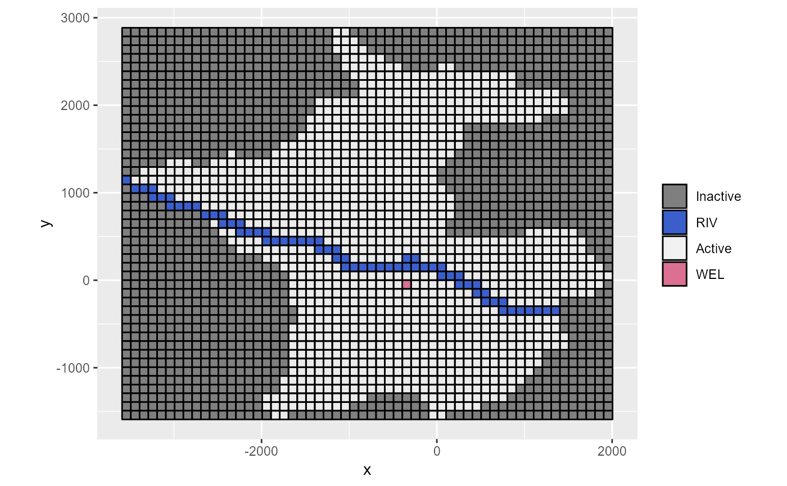
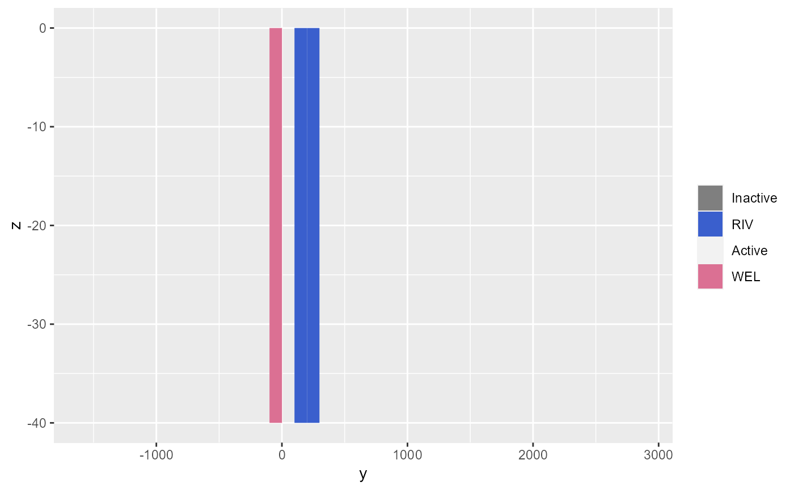
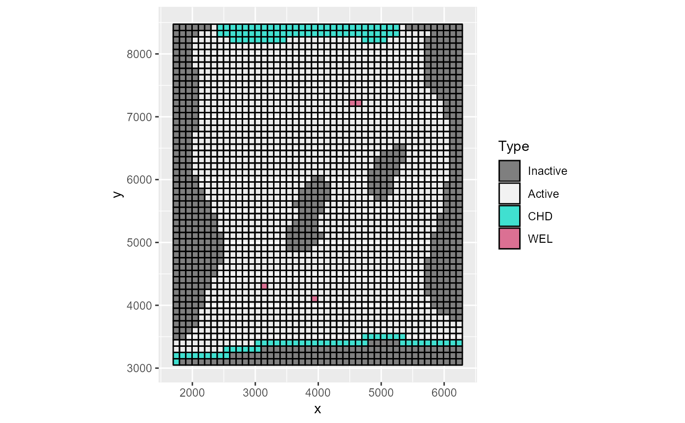
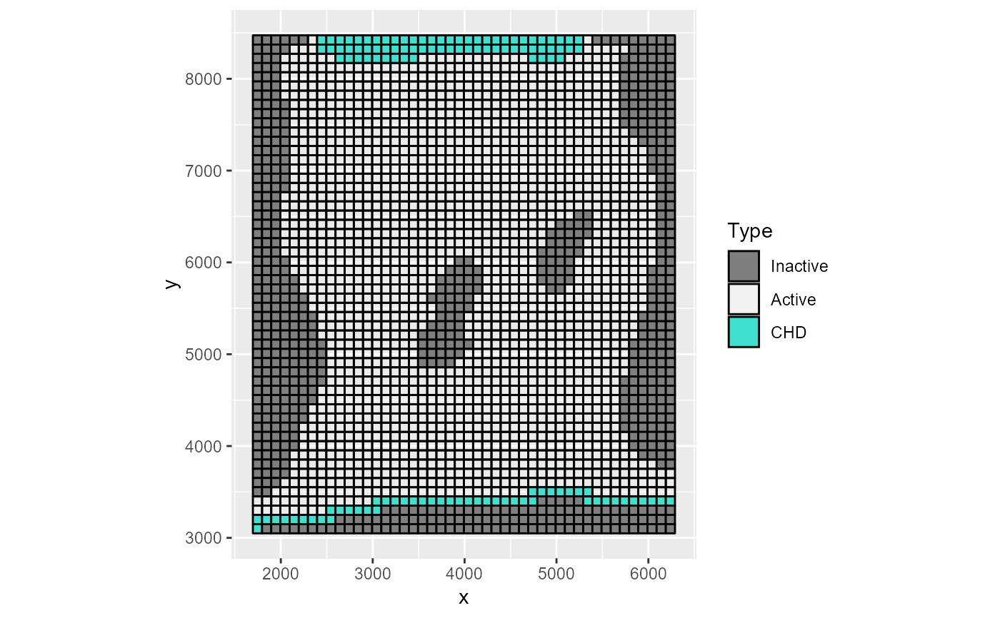
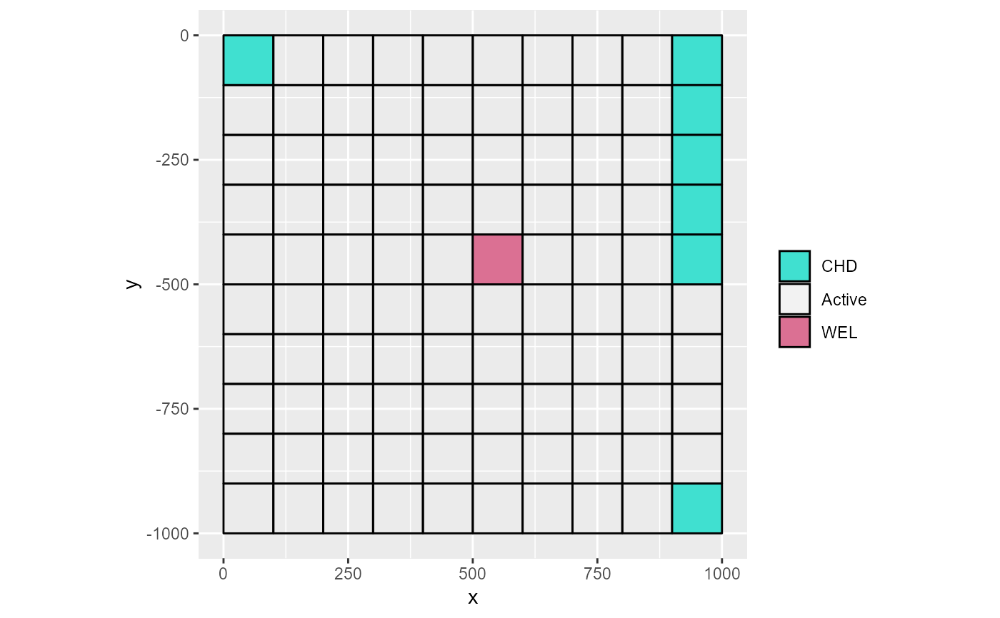
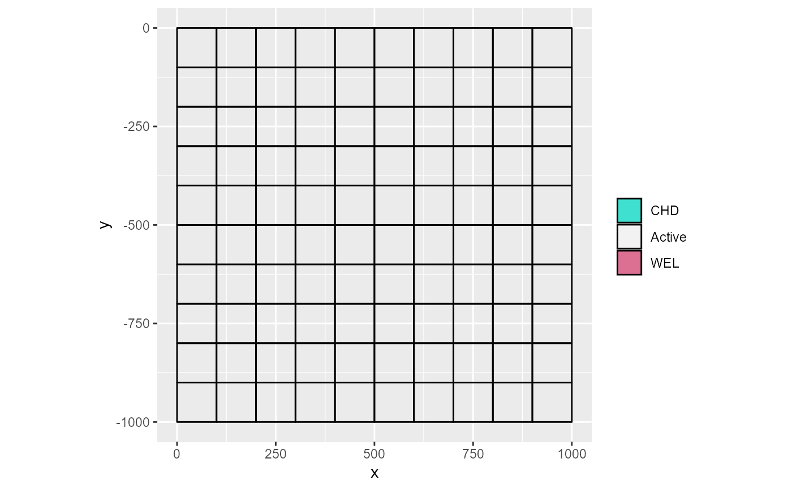
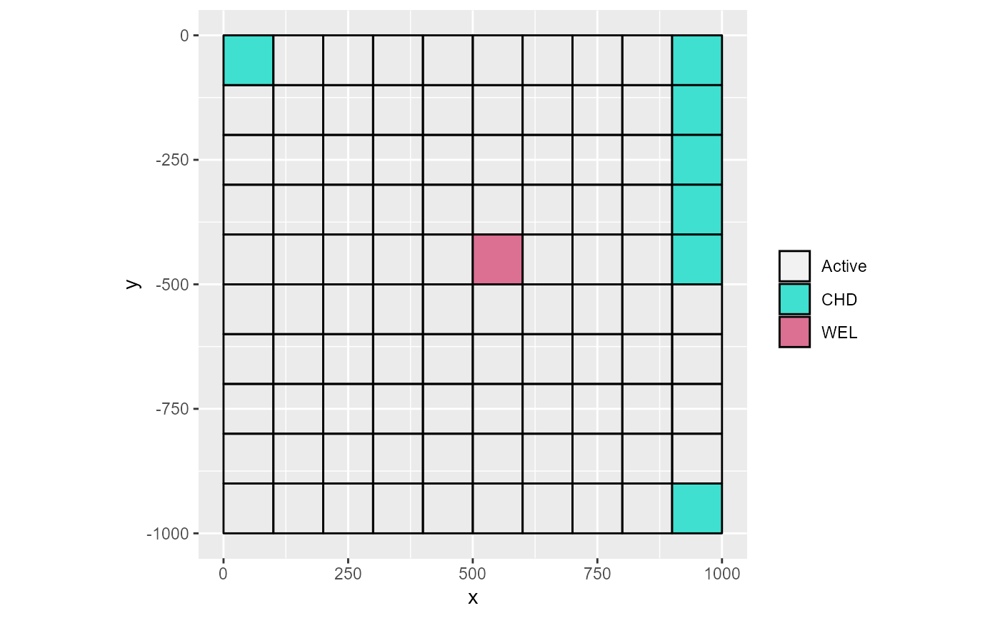

rmf_plot.modflow plots a 2D section through a MODFLOW model showing the IBOUND array and discrete boundary conditions.
# S3 method for modflow rmf_plot( modflow, i = NULL, j = NULL, k = NULL, omit = NULL, to_k = FALSE, gridlines = TRUE, prj = rmf_get_prj(modflow), legend = "", crop = FALSE, size = 1, ... )
| modflow |
|
|---|---|
| i | row number to plot |
| j | column number to plot |
| k | layer number to plot |
| omit | character vector with MODFLOW ftypes specifying which packages to omit from the plot. Defaults to plotting all packages. |
| to_k | logical; if a layer section is plotted ( |
| gridlines | logical; should grid lines be plotted? alternatively, provide colour of the grid lines. Defaults to TRUE. |
| prj | projection file object |
| legend | character denoting the legend of the plot. Defaults to |
| crop | logical; should plot be cropped by dropping NA values; defaults to FALSE |
| size | numeric; size of the HFB line if present in |
| ... | parameters provided to plot.rmf_3d_array |
ggplot2 object or layer; if plot3D is TRUE, nothing is returned and the plot is made directly
Only the IBOUND and the locations of the discrete boundary condition packages are plotted.
to_k only reprojects boundary condition cells, not IBOUND cells, to layer k. It is not used when k is not defined. This is useful
to plot all boundary condition cells even if they are not present in the current layer k, e.g. wells in deeper layers.
m2 <- rmf_example_file('rocky-mountain-arsenal.nam') %>% rmf_read(verbose = FALSE) rmf_plot(m2, k = 1, legend = 'Type')